Suppose
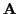
is a square, invertible, block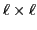
matrix with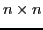
blocks, that is characterized by either (or both) of the following conditions: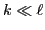
(or, more generally, the number of non-zero blocks is much less than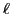
).We consider the problem of determining an approximation
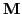
to such that either
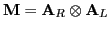
or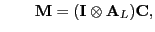
where denotes the Kronecker product, and
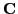
is a matrix with circulant blocks. The leftmost problem has been studied previously (see, for example, [1,2]). Our approach differs from previous approaches in that we produce the desired factorization by representing the approximation problem as a third-order tensor (i.e. 3D array) approximation problem. In the context of PDEs, the approximation has the advantage of being relatively easy to directly invert and therefore is attractive as a preconditioner. In the context of image deblurring, we can relatively easily compute rank-revealing factorizations of , which can then be used to generate regularized preconditioners or surrogate filters, etc.Specifically, we take the relevant descriptive information from and put this into an appropriately oriented
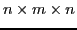
, third-order tensor, denoted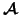
. We then consider the tensor approximation problem
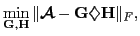
with possible constraints on Hwhere the
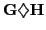
is the product-cyclic tensor, first defined in [3], given by
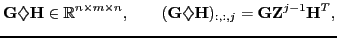
and
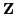
is the downshift matrix. We will discuss how the entries of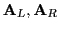
or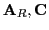
are constructed from entries in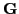
and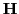
.Numerical results for spatially variant blurring operators show the possible utility of this approach.
References:
[1] C. F. Van Loan and N. P. Pitsianis, ``Approximation with
Kronecker Products," in Linear Algebra for Large Scale and Real
Time Applications,
Kluwer Publications, 1993, M. S. Moonen and G. H. Golub eds, pages 293-314.
[2] J. Kamm and J. G. Nagy, ``Optimal Kronecker Product
Approximation of Block Toeplitz Matrices," SIAM Journal on Matrix
Analysis and Applications,
volume 22, 2000, pages 155-172.
[3] M. E. Kilmer and T. G. Kolda, ``Approximations of Third Order Tensors as Sums of (Non-negative) Product Cyclic Tensors," Plenary Presentation, Householder Symposium, June 2011.